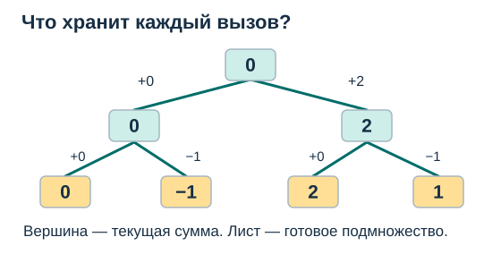

Рекурсия и динамическое программирование
Рекурсия. Как перебрать все варианты
Найдём суммы всех подмножеств массива [2, −1]. Для каждого элемента есть два действия — пропустить его или взять. После выбора остаётся та же задача для оставшихся элементов. Рекурсия позволяет функции вызвать саму себя для этого более короткого остатка.
| Выбор для 2 | Выбор для −1 | Итоговая сумма |
|---|---|---|
| Пропустить | Пропустить | 0 |
| Пропустить | Взять | −1 |
| Взять | Пропустить | 2 |
| Взять | Взять | 1 |

Пройди дерево решений
Попробуй получить все четыре подмножества чисел 2 и −1. Каждый выбор ведёт в следующий вызов. Вернись на один уровень и измени только последний выбор.
На рисунке видно всё дерево. Во время обхода в стеке хранятся только вызовы на пути от корня до текущей вершины. Каждый вызов хранит данные для возврата к предыдущему выбору. Длина этой цепочки не больше n + 1. Всего у дерева 2ⁿ листьев.
Каждый вызов помнит две величины. Индекс показывает, какой элемент рассматриваем, а subset_sum хранит сумму уже взятых элементов. В первой ветви увеличиваем только индекс. Во второй прибавляем к сумме значение взятого элемента.
Когда индекс равен длине массива, выбора больше нет. Это базовый случай. Записываем сумму и завершаем вызов. Для пустого массива сразу запишем 0. Разные подмножества могут давать одинаковые суммы, поэтому в ответе возможны повторы.
Вариантов 2ⁿ, поэтому время перебора составляет O(2ⁿ). При n = 30 это уже больше миллиарда вариантов. Для цепочки вызовов нужно O(n) памяти, для списка ответов — O(2ⁿ). Если требуется только количество подходящих подмножеств, можно вместо списка накапливать счётчик.
C++
#include <cstddef>
#include <vector>
using std::size_t;
using std::vector;
using Int = long long;
using Numbers = vector<Int>;
void visit_subsets(const Numbers& values, size_t index, Int subset_sum, Numbers& result) {
if (index == values.size()) {
result.push_back(subset_sum);
return;
}
visit_subsets(values, index + 1, subset_sum, result);
visit_subsets(values, index + 1, subset_sum + values[index], result);
}
Numbers subset_sums(const Numbers& values) {
Numbers result;
visit_subsets(values, 0, 0, result);
return result;
}
Тот же алгоритм на Python
def subset_sums(values):
result = []
def visit(index, subset_sum):
if index == len(values):
result.append(subset_sum)
return
visit(index + 1, subset_sum)
visit(index + 1, subset_sum + values[index])
visit(0, 0)
return result
Динамическое программирование. Как выбрать самый дешёвый путь
Перед лестницей стоит человек. За шаг он поднимается на одну или две ступеньки. Попадание на ступеньку index стоит cost[index]. Нужно оказаться на последней ступеньке и заплатить как можно меньше.
На ступеньку с индексом index ≥ 2 можно попасть только со ступенек index − 1 и index − 2. Зная наименьшую цену достижения двух предшествующих позиций, можно сразу вычислить лучшую цену для текущей. Такой способ получить ответ из ответов для меньших задач называется динамическим программированием.
Для цен [5, 2, 10, 1] получаем следующую таблицу.
| Позиция | Перед лестницей | 0 | 1 | 2 | 3 |
|---|---|---|---|---|---|
| Цена посещения | — | 5 | 2 | 10 | 1 |
| Лучшая сумма до позиции | 0 | 5 | 2 | 12 | 3 |
Например, на ступеньку 2 можно попасть со ступеньки 0 или 1. Выбираем меньшую из сумм 5 и 2, прибавляем цену посещения 10 и получаем 12. На последнюю ступеньку выгоднее перейти сразу со ступеньки 1. Весь путь стоит 2 + 1 = 3.
Для ступеньки 0 ответ равен её цене. Дальше работает правило dp[index] = cost[index] + min(dp[index − 1], dp[index − 2]). При index = 1 позиция перед лестницей имеет цену 0. В коде её хранит отдельная переменная. Индекс −1 в Python означал бы последний элемент списка.
Для следующего расчёта нужны лишь две предыдущие суммы — cost_two_steps_back и previous_cost. После каждого шага сдвигаем обе на одну позицию. Время работы составляет O(n), дополнительная память — O(1). Если лестница пуста, функция возвращает 0.
C++
#include <algorithm>
#include <cstddef>
#include <vector>
using std::min;
using std::size_t;
using std::vector;
using Int = long long;
using Numbers = vector<Int>;
Int min_stair_cost(const Numbers& cost) {
if (cost.empty()) return 0;
Int cost_two_steps_back = 0, previous_cost = cost[0];
for (size_t index = 1; index < cost.size(); ++index) {
Int current_cost = cost[index] + min(cost_two_steps_back, previous_cost);
cost_two_steps_back = previous_cost;
previous_cost = current_cost;
}
return previous_cost;
}
Тот же алгоритм на Python
def min_stair_cost(cost):
if not cost:
return 0
cost_two_steps_back, previous_cost = 0, cost[0]
for index in range(1, len(cost)):
current_cost = cost[index] + min(cost_two_steps_back, previous_cost)
cost_two_steps_back, previous_cost = previous_cost, current_cost
return previous_cost